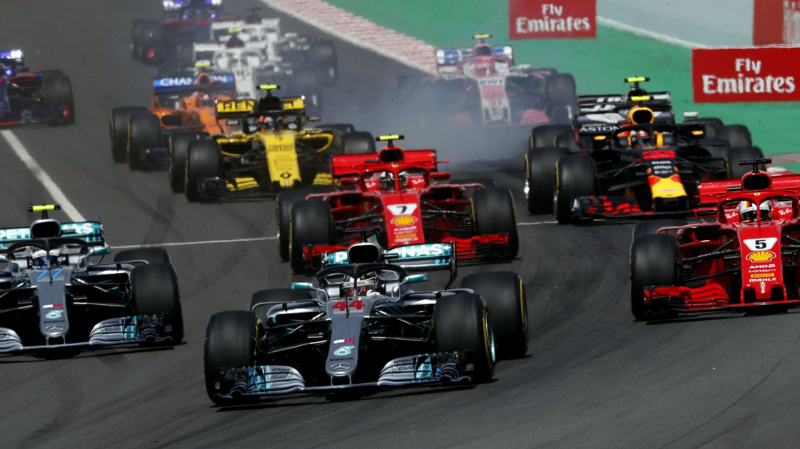
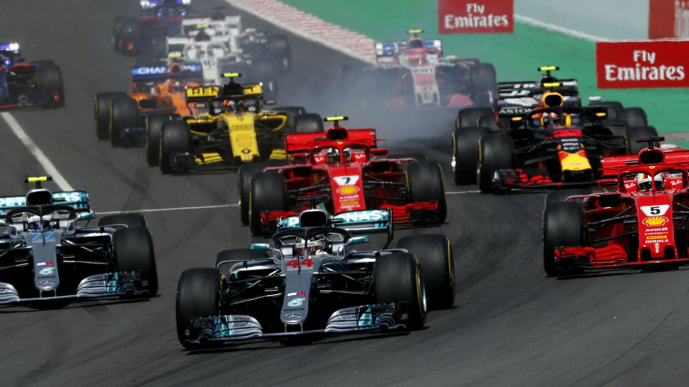
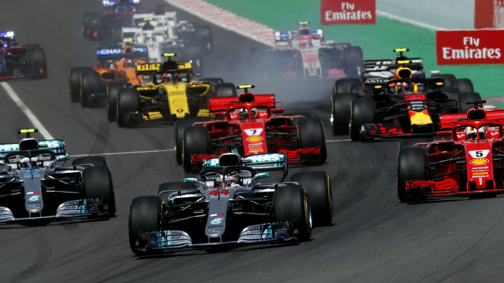

hola mundo
hola mundo
hola mundo
hola mundo
hola mundo
hola mundo
FÓRMULA 1
La Fórmula 1 (F1) es una competición de automovilismo internacional que se considera la más popular y prestigiosa del mundo. En ella, equipos de dos pilotos compiten en monoplazas de última tecnología en circuitos alrededor del mundo llenos de adrenalina y velocidad.

Mirar Galeria
Equipos de F1
Factores de la F1
Los Autos/Monoplazas
LAs escuderias
Los pilotos
Las carreras
El sistema de puntos
LAs reglas
Caracteristicas de la F1
Los equipos están conformados por dos pilotos y se denominan escuderías.
Los autos de Fórmula 1 son monoplazas de un solo asiento, con una anchura máxima de 200 cm y llantas fuera de la carrocería.
Los autos pueden alcanzar velocidades de hasta 370 km/h en recta.
Las carreras de Fórmula 1 se llaman Grand Prix y tienen una distancia mínima de 305 km.
Los pilotos compiten por el Mundial de Pilotos, donde el ganador es el que más puntos acumula.
Pagina Oficial de la Fórmula 1
Visita la Página Oficial
Mi primer sitio web, hecho por Karla en el bootcamp de Tecnolochicas Pro
 
